after doing the relevant reading for this lecture, listening to the
lecture, and attending the relevant tutorial, you will be able to:
explain the general rationale behind trees for MPL
explain the particular rationale behind each tree rule for MPL
explain what it means to say that a path is saturated
construct trees using the tree rules for MPL
use trees to test for various logical properties of MPL
formulas
read off (counter)models from open paths of MPL trees
required reading
section 10.1 of chapter 10
tables and trees
tables and trees
recall that in PL we had two methods of proof: truth tables and
truth trees
in MPL we have only one: truth trees
the tree rules for MPL are similar to those for PL
but there are additional rules for the quantifiers
and the rationale appeals to models
let’s start by running through the rationale for the rules
rationale for tree rules
rationale for tree rules
the general rationale for the tree rules:
the rules prescribe propositions that must be true, given that what
we have already written down is true
in the non-branching case:
if there is a model in which every proposition on some old path is
true, then there is a model in which every proposition on the new path
is true.
in the branching case:
if there is a model in which every proposition on some old path is
true, then there is a model in which every proposition on at least one
new path is true.
all of the rules from PL have the relevant property. Take the rules
for negated disjunction (a non-branching rule) and disjunction (a
branching rule) for example.
the rationale for the rule for negated disjunction
rule for negated disjunction:
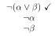
rationale:
suppose there is some model in which
is true
it follows by rule (2) that
is false on this model
it follows by rule (4) that
and
are both false on this model
it follows by rule (2) that
and
are both true on this model
so if there is a model in which every proposition on some old path
is true before this rule is applied, then there is a model in
which every proposition on the new path is true after this rule
has been applied
the rationale for the rule for disjunction
rule for disjunction:
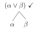
rationale:
suppose there is a model in which
is true
it follows by rule (4) that either
is true or
is true in this model
so if there is a model in which every proposition on some old path
is true before this rule is applied, then there is a model in which
every proposition on at least one new path is true after this rule has
been applied
rules for quantifiers
rules for quantifiers
we now introduce four new rules for the quantifiers.
the rule for negated existential quantifier.
the rule for negated universal quantifier.
the rule for existential quantifier.
the rule for universal quantifier.
the application of the rules for the negated quantifiers is the same
as for the other rules.
the unnegated quantifiers require special treatment.
rule for negated existential quantifier
rationale:
suppose that
is true in some model
it follows from this that
is false in
it follows from this that there is no model just like
except that it also assigns a referent to
—where
is
is some name to which
assigns no referent—in which
is true
in other words,
is false in every model just like
except that it also assigns a referent to
it follows from this that
is true on every model just like
except that it also assigns a referent to
it follows from this that
is true in
rule for negated universal quantifier
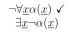
rationale:
suppose that
is true in some model
it follows from this that
is false in
it follows from this that there is some model just like
except that it also assigns a referent
—where
is some name to which
assign no referent—in which
(/
)
is false
it follows from this that
(/
)
is true in
.
It follows that
is true in
rule for existential quantifier
note 1: at the time of applying the rule at the bottom of some path,
the name
used in applying the rule must be one that has not yet appeared anywhere
on the path.
note 2: when applying the rule and checking off the formula, we
write the name we have used in applying the rule next to the check
mark.
let’s look at a couple of examples . . .
suppose we have:
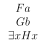
the following is a correct application of the rule for the
existential quantifier:
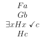
the name
has not been used on the path
the following is an incorrect application of the rule for the
existential quantifier:
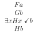
the name
has already been used on the path
okay, now consider another example
suppose we have:
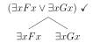
we apply the rule for the existential quantifier once:
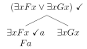
we apply the rule again:
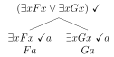
this is okay because the name has not been used on this
path.
okay, now let’s look at the rationale for the rule for the
existential quantifier
rationale:
suppose there is a model
in which
is true.
it follows from this that there is at least one object
in the domain of
such that
is true in
,
where
is some name not assigned a referent in
,
and
is a model that is just like
except that in it the name
is assigned the referent
.
so, if there is a model
in which
is true, then there is a different model
in which
is true
will be true on
.
so, if there is a model
in which
is true, then there is a different model
in which
is true, and
is true.
rule for universal quantifier:
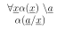
note 1: the name
does not have to be new on the path
note 2: when applying the rule, we write a backslash, not a check
mark—and we write the name used in applying the rule next to the
backslash
note 3: we can apply the rule multiple times
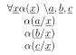
okay, let’s go over the rationale for the rule for the universal
quantifier
rationale (case 1):
suppose that the name
used in applying the rule is new to the path.
if there is a model
in which
is true, then for every object
in the domain of
,
is true in
where
is our new name (which is not assigned a referent in
),
and
is a model that is just like
except that in it the name
is assigned the referent
if
is true in
,
then
is true in
.
it follows that if there is a model in which
is true, then there is a model on which
is true and
is true.
rationale (case 2):
suppose that the name
used in applying the rule is not new to the path.
if there is a model
in which
is true, then for every object
in the domain of
,
is true in
where
is a new name (which is not assigned a referent in
),
and
is a model that is just like
except that in it the name
is assigned the referent
in this case,
is (already) assigned to a referent in
—suppose
it is assigned to the object k
we have just seen that
is true in every model just like
except that it assigns a referent to
so
is true in
,
the model that assigns
’s
referent to k
but then
must be true in
,
because
’s
referent is the same object k
okay, so much for the motivation for the rules for the existential
quantifier and the universal quantifier, now let’s take a look at trees
for MPL in their entirety
tree rules for MPL
tree rules for MPL
the tree rules for MPL consist of:
the tree rules from PL.
tree rules for disjunction, negated disjunction, conjunction,
negated conjunction, conditional, negated conditional, biconditional,
negated biconditional, and double negation are the same as in PL
and the tree rules for the quantifiers:
rule for existential quantifier
rule for negated existential quantifier
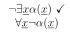
rule for universal quantifier
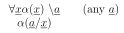
rule for negated universal quantifier
recommended order of application
there’s a recommended order of application for the rules:
rules from PL. non-branching first
rules for negated quantifiers
rule for (unnegated) existential quantifier
rule for (unnegated) universal quantifier
that’s it. those are the four new rules, and notes on their
application.
now we’ve got to say something about finished trees
finished trees, saturated paths
finished trees, saturated paths
because we can go on applying the rule for the universal quantifier
as many times as we like, we need to say something about when our trees
are finished
to do so we appel to the idea of a saturated path
a tree is finished if each of its paths is either
closed or saturated.
a path is saturated if and only if
every formula on it—apart from atomic formulas, negations of atomic
formulas, and formulas whose main operator is a universal quantifier—has
had the relevant rule applied; and
every formula on it whose main operator is a universal quantifier
has had the universal quantifier rule applied to it at least once,
and
has had the rule applied to it once for each name that appears on
the path.
let’s consider an example
suppose we have:
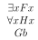
we apply the existential quantifier rule to get:
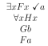
then we apply the universal quantifier rule to get:
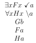
this tree is unfinished!
why? because there is a name no the path,
in this case, which we have not yet used in applying the universal
quantifier rule
so we apply the universal quanfitier rule using the name
to get:
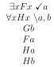
this tree is finished!
why? because we’ve applied the universal quantifier rule at least
once, and we have applied it using every name on the path
don’t worry if you haven’t fully understood the idea of saturating a
path
we’ll do plenty of practice in the live lecture and in the
tutorials